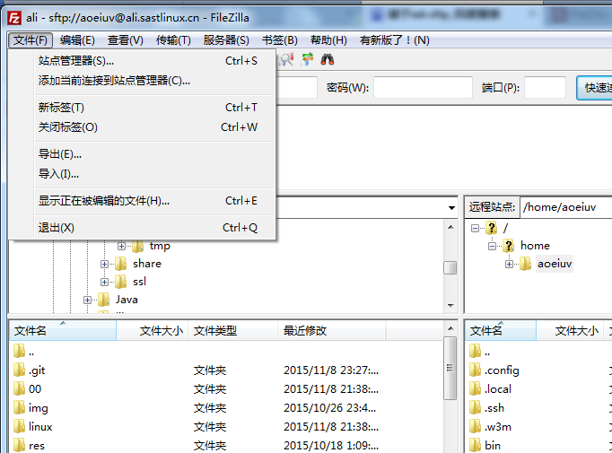
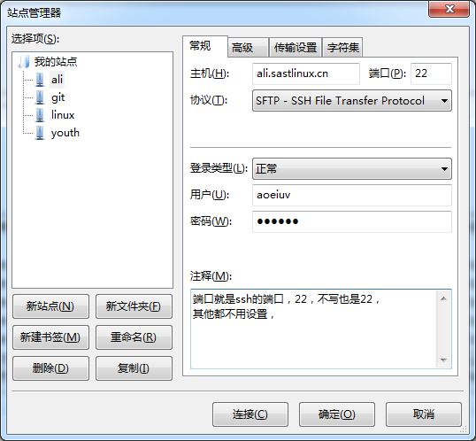
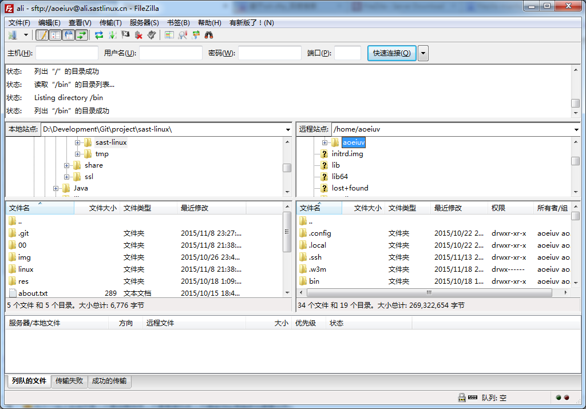
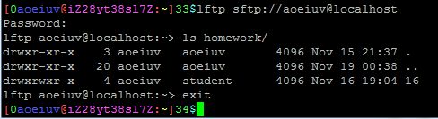
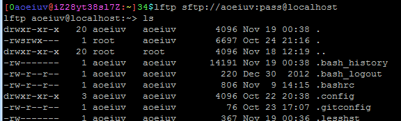
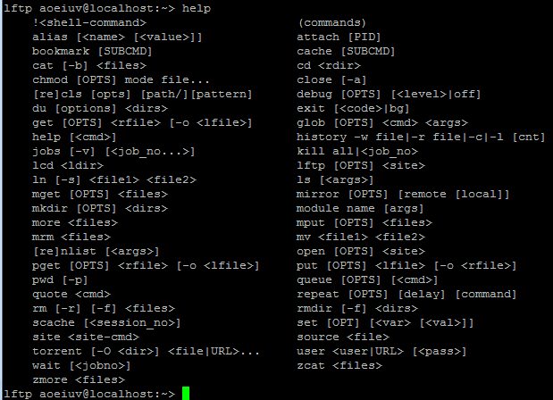
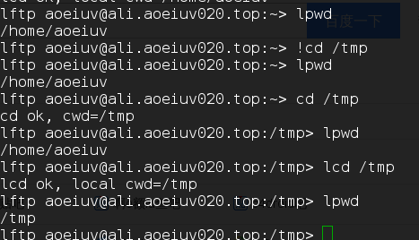
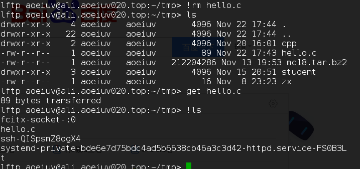
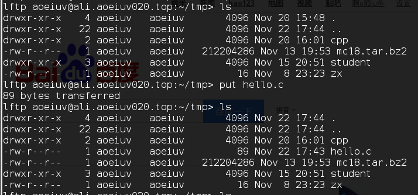

ftp知道吧，sftp是基于ssh，也就是说服务器不需要其他设置，只要能用ssh登录上，就能用sftp上传下载文件，是用和ftp相同的命令来做ftp能做的事，先说个图形界面的工具吧，filezilla，而且这是开源免费的，windows,linux,mac都支持，windows版的下载 用法简单介绍，图形界面的工具，应该不用多说的，进站点管理器。

添加个站点，注意选sftp，用自己的用户名密码登陆。

然后就连上了，左边是自己电脑里的文件，右边上服务器上的文件，上传下载就拖来拖去就好。

然后是个命令行的sftp工具。



命令挺多的，基本和ftp一样，ls,rm,mv,mkdir,rmdir,cd,lcd,pwd,lpwd，其实都是linux命令，那些l开头的是因为要分成远程的本地两种，l开头的是本地的，还有感叹号!开头表示执行shell命令，比如!ls就是在本地执行ls列出本地文件，之前说过，cd这种命令是不能用外部命令实现的，要改变本地的工作目录只能是lcd不能是!cd。

上传文件是put，下载文件是get。


lftp有个ftp没有的，用来传整个文件夹的，mirror，如果不是经常工作在命令行下，主要还是用有图形界面的filezilla，lftp简单了解，需要的时候能用的就好，不会用也要能help，通过sftp，就可以在linux服务器上传下载文件，如果自己有个Linux服务器，要安装配置什么的时候，如果无法直接ssh在服务器上完成，可以试试在本地写完后再通过sftp上传到服务器。